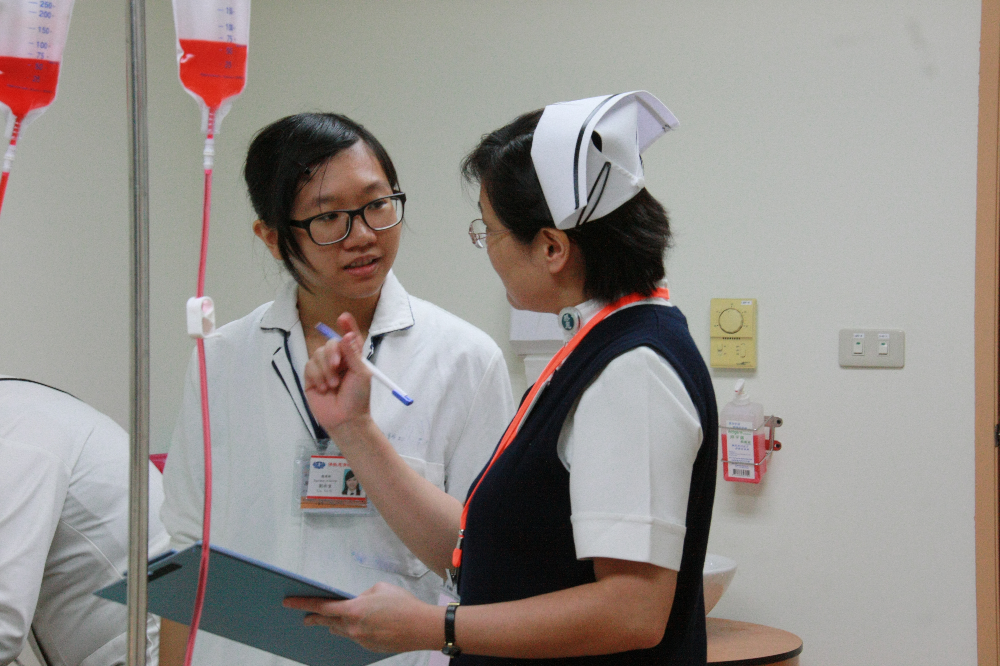
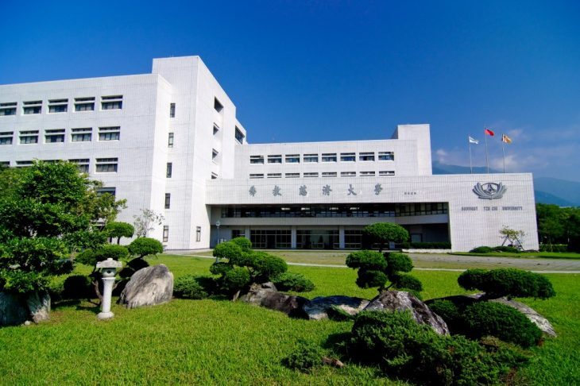
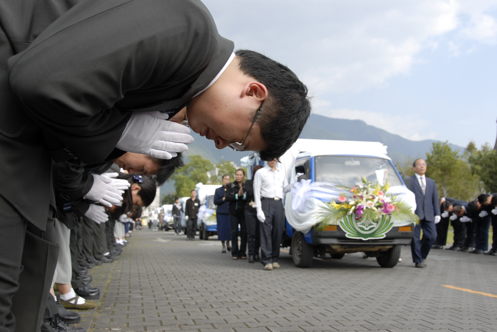
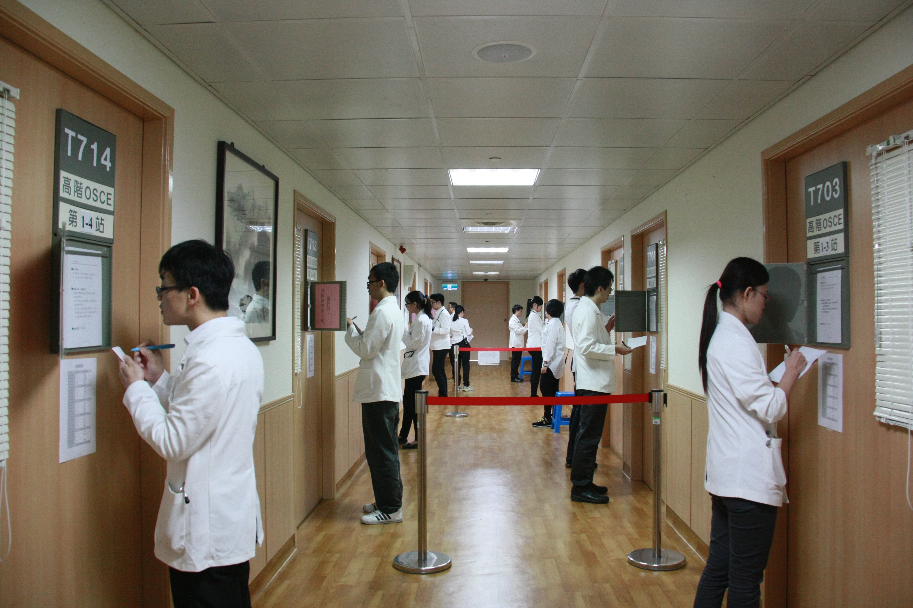
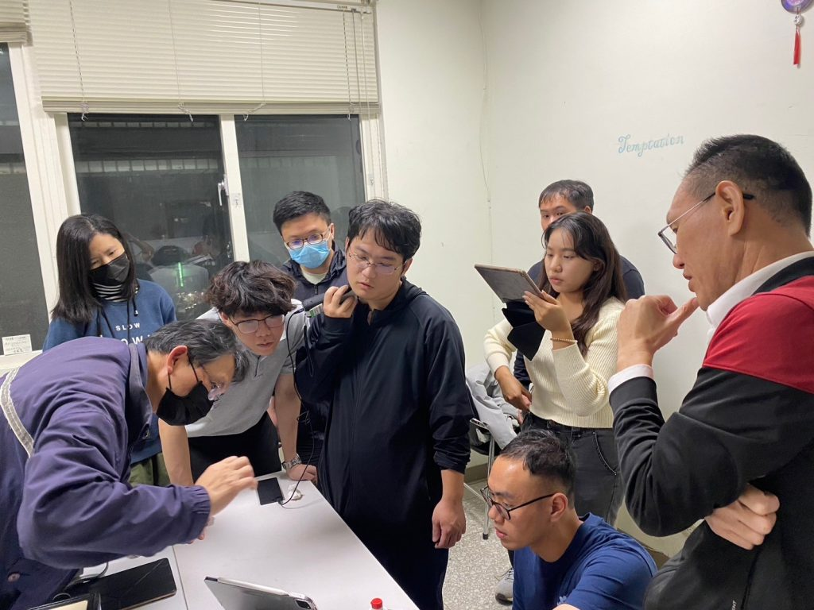

良語良師
慈濟志工擔任標準化病人，協助學生精進問診、溝通與身體檢查，也參與國家級 OSCE 測驗。

本系於民國83年10月16日慈濟醫學院創校時成立，秉持創辦人證嚴法師「無緣大慈，同體大悲」的精神。
培養術德兼修、關懷生命、擁有慈濟大愛與利他情懷，善於溝通、重視團隊合作，樂於承擔社會責任的良醫。
我們期望提升東臺灣的醫療資源與醫學教育發展，守護東臺灣民眾的健康。民國89年學校更名為「慈濟大學」，自97學年度起連續獲教育部「教學卓越計畫」獎助。
基礎醫學搭配臨床情境，提早銜接臨床經驗。
小組問題導向學習，養成自主學習能力。
以 OSCE、mini-CEX、Portfolio 評估臨床能力。

人文專題
在慈大，醫學生上解剖課之前，會先拜訪大體老師的家屬，聆聽老師的生命故事。透過啟用、送靈與感恩追思典禮，學生學到的不只是人體構造，更是對生命的尊重。
本系自2003年起開設大體模擬手術教學，讓實習醫學生在最接近真實病人的條件下學習手術技能。
認識模擬醫學中心實習醫學生在四家慈濟醫院與偏鄉分院之間輪訓，接觸不同區域的醫療型態與病人。

慈濟志工擔任標準化病人，協助學生精進問診、溝通與身體檢查，也參與國家級 OSCE 測驗。

臨床實習由花蓮、台北、台中、大林慈濟醫院共同承擔，並與玉里、關山分院合作社區醫療。

教學型主治醫師以小組教學帶領學生面對真實病人；從手持式超音波到身體檢查，都在師長身邊從做中學。
本系核子醫學科等教師通過升等審查，持續深耕教學、研究與臨床服務。
走進慈濟醫學生的一天：從解剖教室、臨床技能中心到花蓮的病房。
影片將於後續課程完成拍攝後更新。